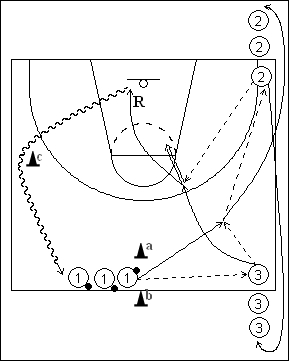

Catégorie : SHOOTS (Sh-007)
Déroulement
- Trois files de joueurs, la file 1 avec les ballons entre les cônes a et b au niveau du rond central, la file 2 dans un coin à une baseline et la file 3 du même côté que la file 2 à l’extrémité de la ligne médiane.
- Le premier joueur de la file 1 passe au premier joueur de la file 3 qui lui remet aussitôt le ballon. Le premier joueur de la file 1 transmet maintenant au premier joueur de la file 2 qui prolonge vers le premier joueur de la file 3 qui a sprinté derrière le joueur 1 après sa passe à celui-ci. Le premier joueur de la file 3 effectue le jump shoot.
- Le joueur 3 réalise son rebond et va en dribble dans la file 1 en contournant le cône c. Le joueur 1 va dans la file 2 et le joueur 2 dans la file 3.
Coaching points
- Exiger la plus grande vitesse et la plus grande précision possibles dans les quatre passes qui précèdent le jump shoot.
- On peut modifier le parcours à effectuer par le joueur 3 après son jump shoot en ajoutant des cônes et en demandant de réaliser des changements de directions dans le dribble.